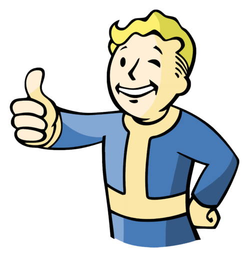
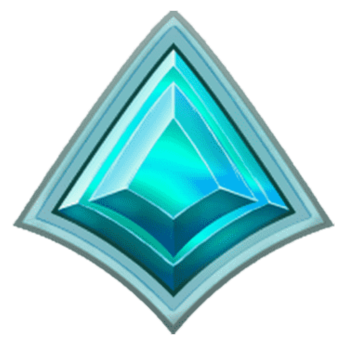

Duygu Ozcan
"Do or do not; there is no try." -Yoda
Me, in one sentence:
I am just a normal person trying to find my way through this world.
| Birthday | 30.04.1993 |
| Favourite colour | Red |
| Favourite food | Frietjes |
| Pineapple on pizza? |
Hobbies
- Playing videogames My favourite games are:
- Fallout 76 
- Paladins
- Tomb Raider Legend
- Lego Star Wars: The Skywalker Saga

- Cooking
- Hiking
- Building Lego
You can always count on me when...
You have a language/linguistics related question. I am also happy to provide seemingly useless but in fact enligtening etymological facts in many languages. I also like cooking for people.
A funny story
We used to live on the 5th floor back at home and I am not one to believe in any supernatural things. One day, I was walking down the stairs to leave the building and for some reason I just thought to myself "Heh. Wouldn't it be weird now if the first floor neighbours left their keys on the door." I don't know why I had this weird thought cause what a random thing to think about, right? And mind you, these are not forgetful people who keep leaving their things lying around etc. They were actually both police officers. Anyway, I made my way down the stairs until I reached the first floor. Lo and behold: The neighbours had left their keys on their front door. I was a bit baffled for a minute there while I stood and said: "Say whaaaaaaaaaat..." So, I rang their bell and told them their keys were on the door. To this day, this is my only experience going through something super weird and random.
TL;DR: I once randomly guessed my neighbours would leave their keys on their front door for no reason whatsoever.